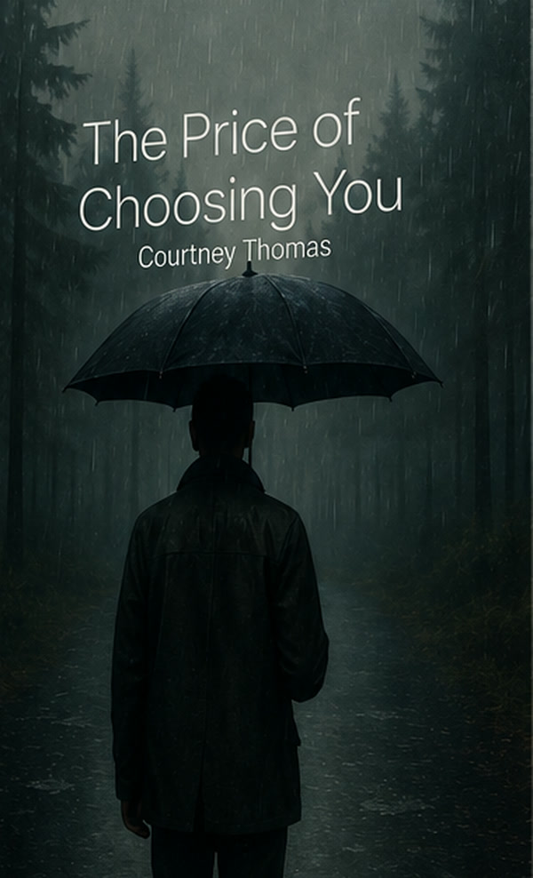
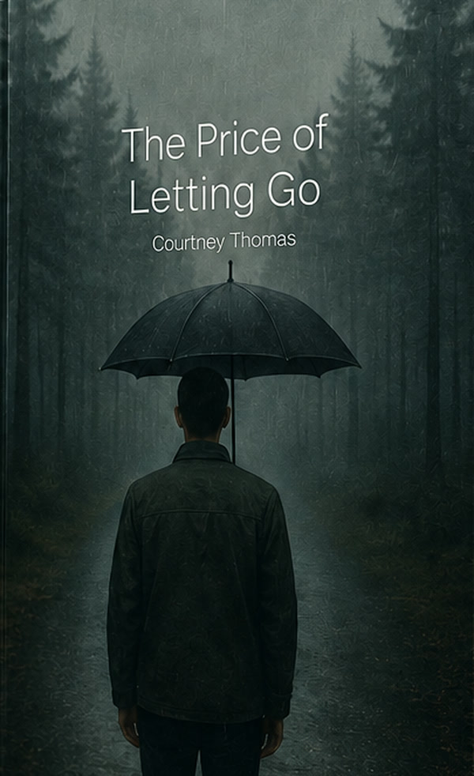
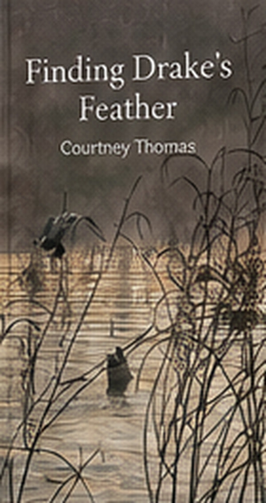

The Price of Choosing You
Survival and sacrifice. Kathryn wakes in chains and learns she is being held against something worse.
View & orderI believe some of the most powerful stories are born from the things we never thought we’d survive.
I’m Courtney Thomas, an author who writes from the heart about faith, healing, loss, purpose, and finding yourself again through life’s hardest seasons.
I believe some of the most powerful stories are born from the things we never thought we’d survive.
I’m Courtney Thomas, an author who writes from the heart about faith, healing, loss, purpose, and finding yourself again through life’s hardest seasons.
My words are rooted in real experiences and the belief that even our most painful chapters can become part of something beautiful.
If something I write makes even one person feel seen, understood, or a little less alone, then every word was worth it
Faith, healing, loss, and purpose
Novels of survival and choice. Devotionals for working mothers. A garden of purpose, a guide back to self-worth, and a gentle story for children learning what it means to miss someone.
Three novels about Kathryn and Kalem: survival, the cost of freedom, and what is worth keeping after the truth is told.

Survival and sacrifice. Kathryn wakes in chains and learns she is being held against something worse.
View & order
Exposure and consequence. Three months free, and freedom still has teeth.
View & order
Legacy, healing, and the truth that remains after everything else is burned away.
View & orderStart here
Prefer shorter reads first? Begin with the journal guide or Rooted in Purpose.
Books written from lived seasons — purpose, self-worth, working motherhood, and a child’s grief.
A garden of essays on seeds, storms, waiting, pruning, and purpose you cannot see yet.
View & orderFor the woman trying to be everyone at once. Overwhelm, boundaries, and a life that matches what you want.
View & order
A duck family learns how to miss Papa Drake, keep his feather, and go on loving him.
View & orderEarly alarms, bedtime guilt, and the grace that meets a working mother in the middle of an ordinary day.
View & order“Your purpose is not lost. It’s growing quietly, even when you cannot see it.” Rooted in Purpose
About
Courtney Thomas writes from the heart about faith, healing, loss, purpose, and finding yourself again through life’s hardest seasons. The essays and devotionals come from real experience. The novels ask what a person keeps after survival is no longer the whole story.
The Price Series follows Kathryn Hale and Kalem from captivity into freedom, exposure, and the quieter work of a life chosen on purpose. Rooted in Purpose treats a life like a garden: seeds, storms, waiting, and pruning. Finding Your Self-Worth, published as Finding Yourself, is for the woman carrying every role at once. 365 Days of Grace is a devotional for the working mom. Finding Drake’s Feather is a story for children who have experienced loss, and for the families who support them.
Her books are in print worldwide through IngramSpark, so they can be ordered from Amazon, Barnes & Noble, Walmart, Books-A-Million, and independent bookstores.
Contact
For book clubs, readings, and notes from readers.